Renders
Exterior and Interior
Exterior courtyard - the central gathering point of the scheme

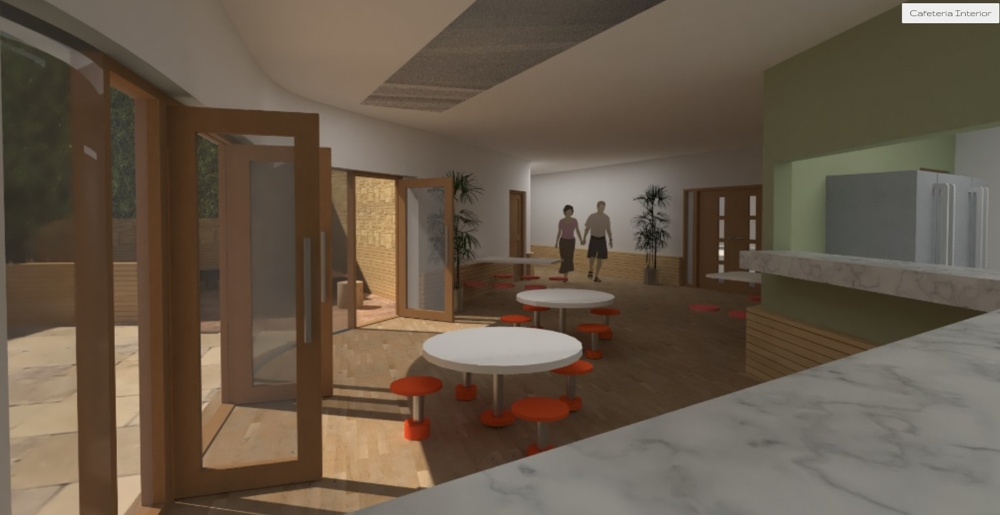
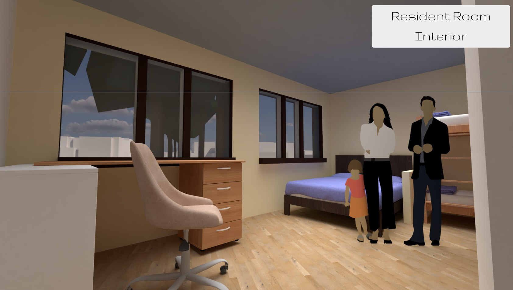
Left to right: colonnade interior, communal space, resident room
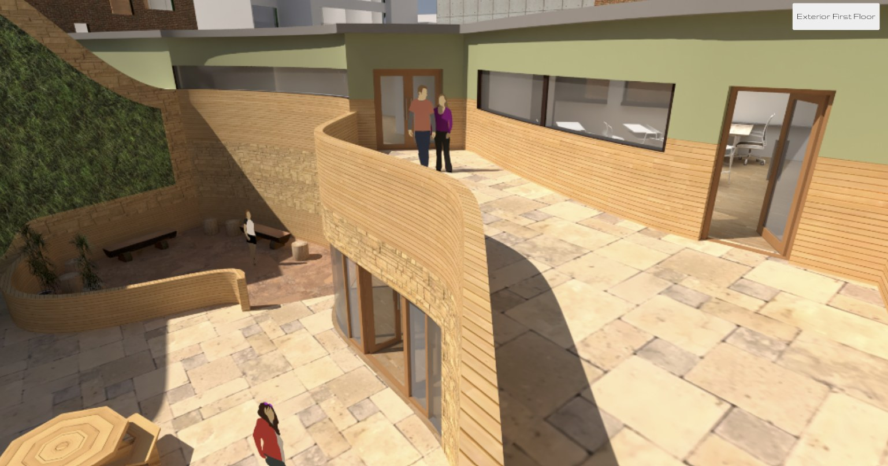
Studio Brief · Individual Project · 2025
Overview
A community centre and temporary residence for families fleeing conflict, sited within Portsmouth city centre. The building is conceived as an oasis - a place of sanctuary after a long and hard journey, designed around the physical and emotional needs of people who have lost homes, possessions, and in many cases family members.
The plan organises around a central courtyard, with the building wrapping the surrounding context and stepping down to a sheltered ground level. A long colonnade runs the length of the public-facing elevation, its repeating undulating arches referencing the journey users have made to arrive here - drawing from the staggered arch corridor at the Exeter College Cohen Quad by Alison Brooks Architects.
Gathering spaces - the classroom, cafeteria, and hall - face south to take full advantage of available sunlight. The residential block sits at the quietest point in the site, away from road noise, with private rooms connecting back through reception and storage to the shared facilities. The building gives privacy where it is needed and community where it can be found.
The material palette draws from warm earth tones - ochres, terracottas, deep greens - to create an interior that feels rooted rather than temporary.
The central lesson from this project was narrative. From the beginning, the brief demanded that I truly understand the people I was designing for - their backgrounds, their trauma, what they actually need from a building. Building a strong story around a design always strengthens it, and this project showed me why. The narrative model was the clearest example: working through the refugee's journey in physical form directly produced the building's defining feature, the repeating arches of the colonnade. My technical skills continued to develop here too, but it is the shift toward story-led design that I took away most from this project.
Narrative and Concept
The design began with a mapping exercise - visually representing the emotional and physical journey of a refugee: forced departure, loss of home and identity, long displacement, and eventual arrival. Inspired by Francis Alys' Sometimes Making Something Leads to Nothing, I translated this map into a physical model tracing the erosion of identity along the way, while showing how roots, once displaced, can grow again.
My chosen client group is families fleeing war who may have lost their homes, possessions, and loved ones. Portsmouth City of Sanctuary provides direct support for people in this situation. Connors Toy Library offers families a space to meet and integrate into the community. The Children's Legal Centre provides legal advice to ensure children's rights are protected while they are in England.
Spatial transitions - concrete to wood, public to private - were used to reflect the journey narrative. Entry through the colonnade is public and processional. The courtyard beyond is quieter, contained. The residential rooms are private. This sequence gives the building its emotional logic as much as its functional one.
Charity Partners
Direct action and compassionate support for people seeking refuge in Portsmouth.
A space for families and children to meet, make friends, and integrate into the community.
Legal advice and support ensuring children's rights are protected while in England.
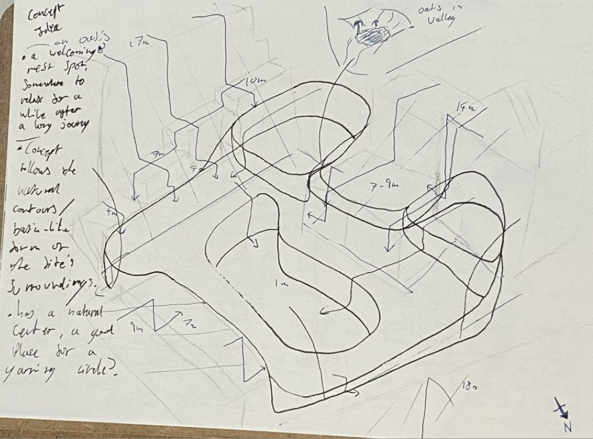
Concept sketch - massing and spatial sequence
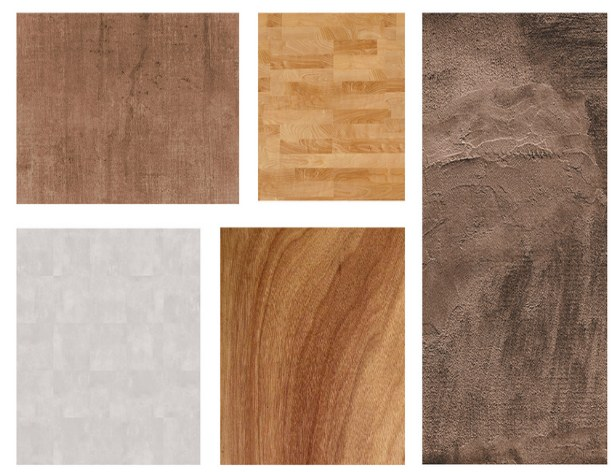
Material palette - earth tones and warm timber
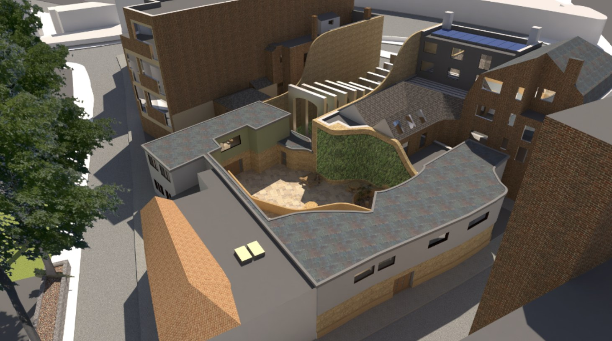
Design Progression
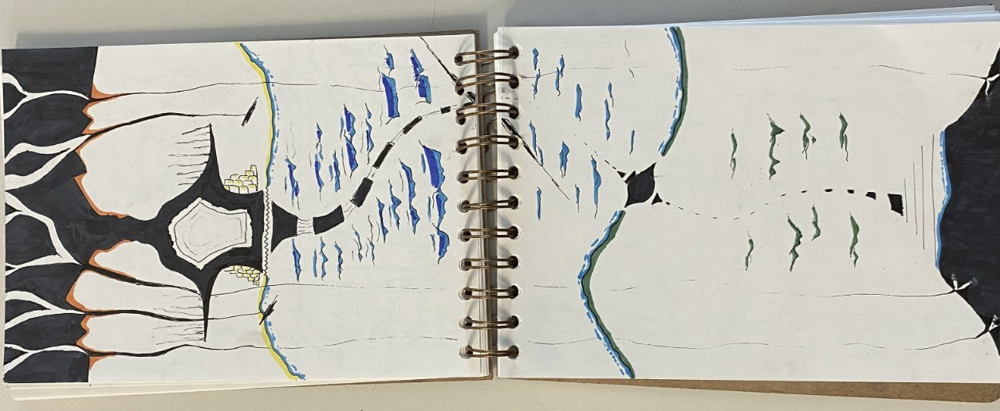
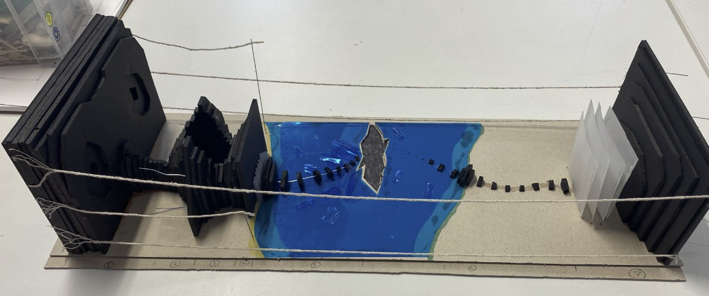
The Narrative Model
The project began with a mapping exercise and a physical model representing the emotional journey of a refugee - not the building itself, but the story behind it. Read left to right, the model traces the full arc of displacement: security and safety at home, then the rupture of war, arrival at a refugee camp where there is some semblance of shelter but no future, and the decision to leave.
The blue section represents the sea crossing - the idea of a brighter future, but also the most dangerous part of the journey. A family member is lost along the way. The black slabs, which represent hope, shrink to almost nothing, then slowly begin to rebuild as the person arrives. The transparent panels that follow represent the bureaucracy of asylum - the forms, the waiting, the layers of process that stand between arrival and belonging. Eventually, the slabs grow again: a slow, uncertain rebuilding of a life.
Strings run the length of the model, connecting the person's old life to their new one. Some are cut. Each cut string is a loss - a friend, a family member, a home, a place. This model, inspired by Francis Alys' Sometimes Making Something Leads to Nothing, became the emotional foundation from which all spatial decisions in the building were made.
Stage 01 - Initial Concept
The first iteration was too large and bore little connection to the journey narrative. I returned to the mapping exercise to reimpose its logic onto the plan: the colonnade as threshold, the courtyard as arrival, the residences as rest.
Stage 02 - Design Development
Subsequent iterations reduced scale, improved solar orientation, and fixed the residential block at the quietest part of the site. The Burtinle District Hospital informed the sanctuary-like quality I was aiming for - spaces that offer calm after hardship.
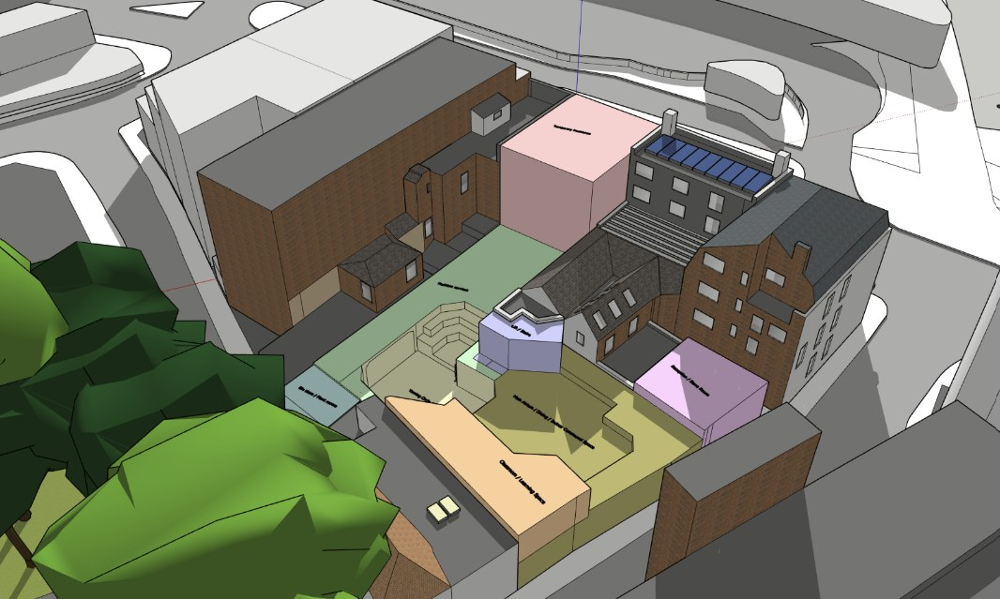
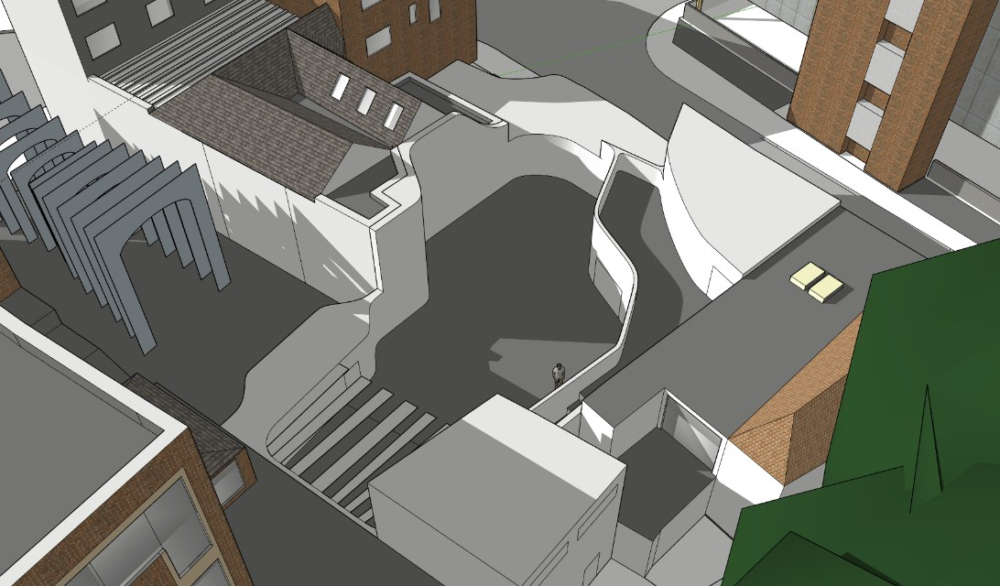
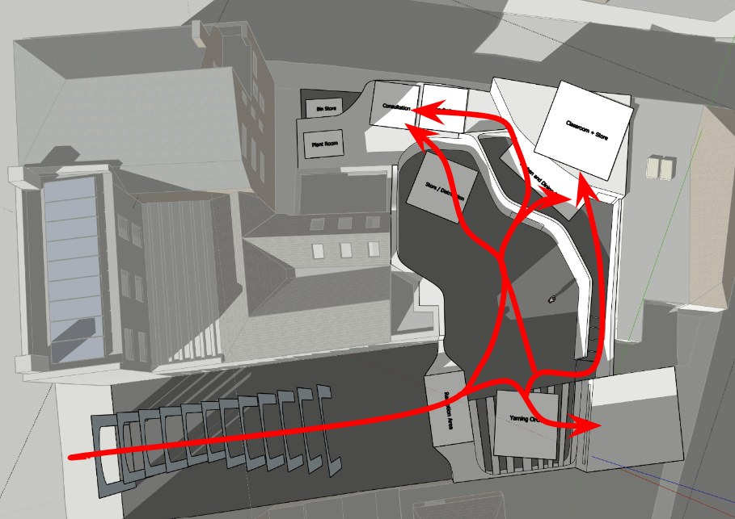
Early design models (iterations 1 and 2) and circulation diagram
Technical Drawings
Ground Floor
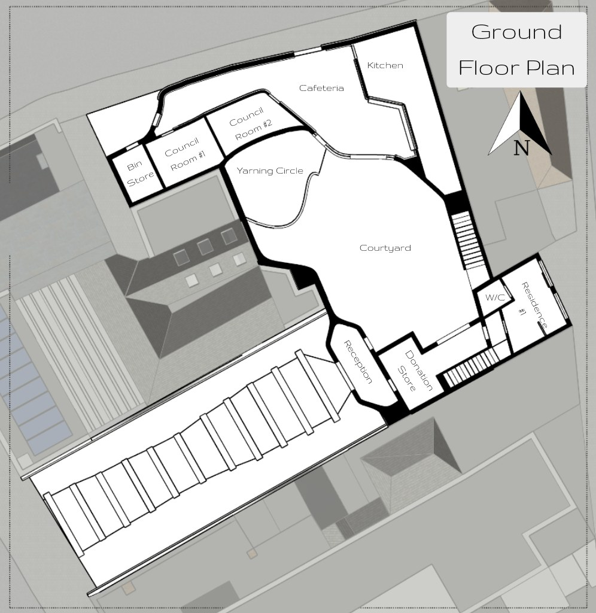
First Floor
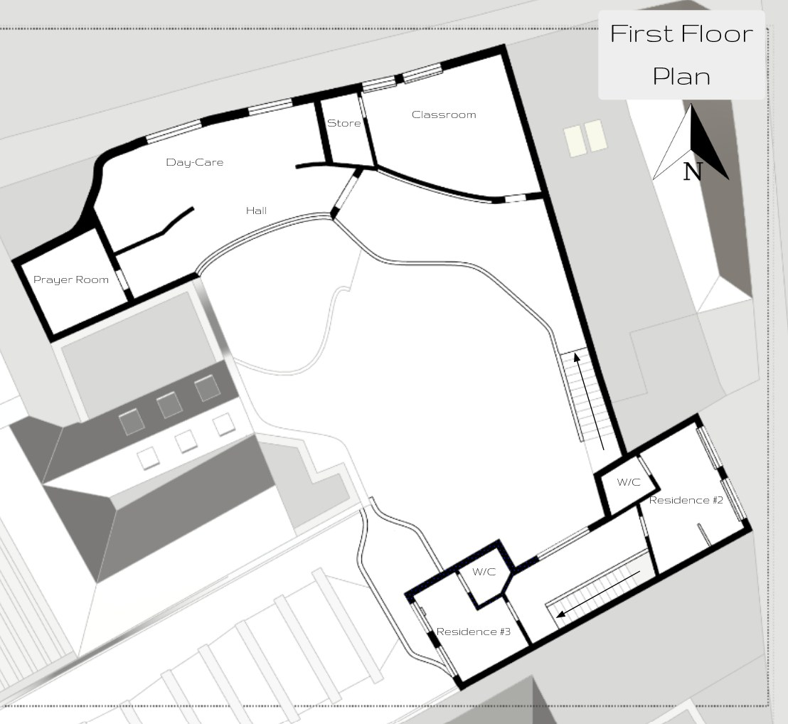
Section 01
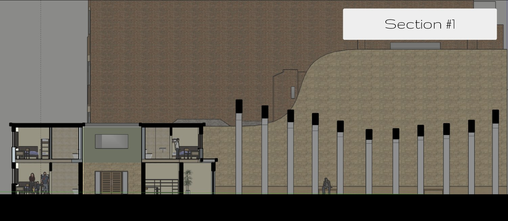
Section 02
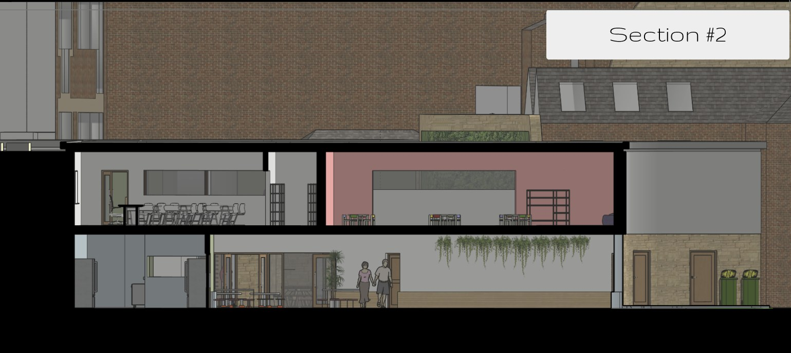
East
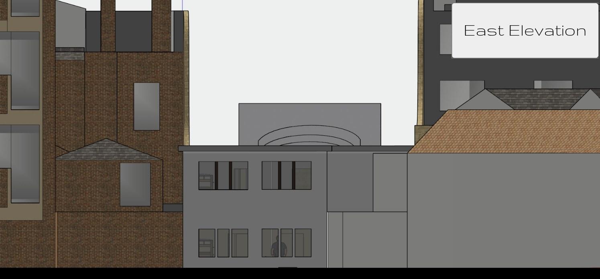
North
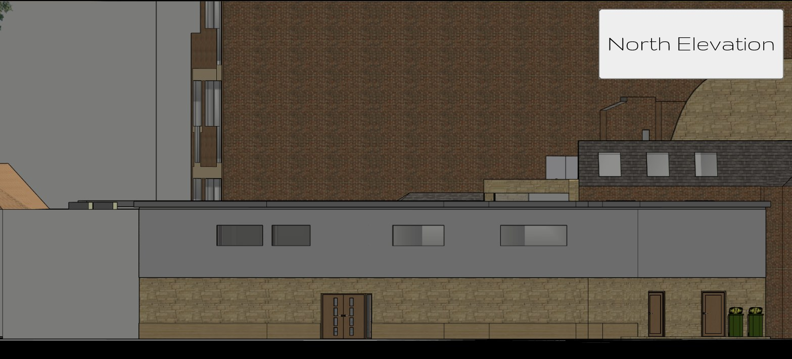
West
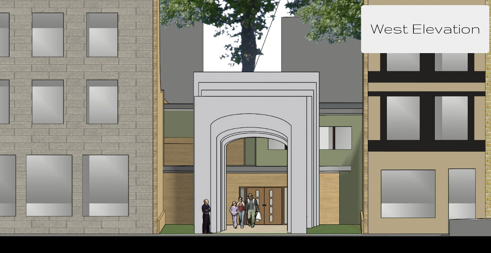
Renders
Exterior courtyard - the central gathering point of the scheme


Left to right: colonnade interior, communal space, resident room